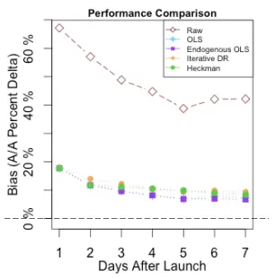
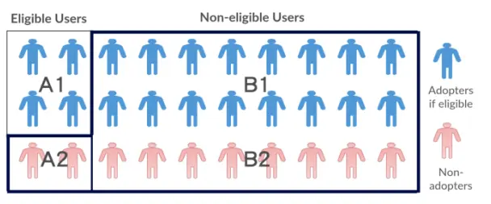
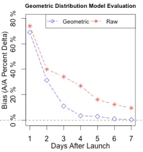
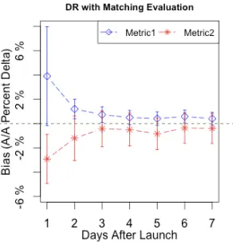
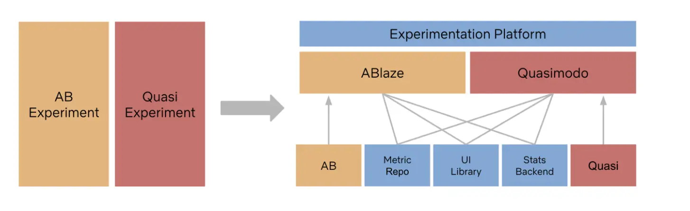

背景
做A/B实验相关工作中遇到一些问题，其中之一就是如何判断新版本对用户影响，以前的做法：
1.所有新功能都预埋开关(默认关)，对新版本用户随机分桶后对实验组开启，用标准A/B实验方法评估。但是这在需要很高开发成本，而且容易出错； 2.同时构建两个新版本，a版本不包含任何新功能，b版本包含全部新功能，对用户随机分桶后，分别开放不同版本的升级，之后对a版本用户、b版本用户用随机实验法进行评估。这也需要较高成本，而且对第三方渠道不能自由控制用户是否可以，仅能用在灰度发布阶段，样本量较小； 3.随机分桶后，仅对实验组开放升级，之后与对照组对比，并可对实验组中升级用户作为训练集，通过机器学习方法判断对照组中愿意升级的用户，对他们进行评估。本方法同样存在2中的问题，只是免去了打a版本发布的过程。
上述问题都有实现难度、成本方面、样本量的问题，那么有没有办法不改变发布流程，科学的评估效果呢？有，LinkedIn用准实验方法做过相同的事情：Evaluating Mobile Apps with A/B and Quasi A/B tests。下面记录下我的个人理解。
准实验是什么?
众所周知，相关不一定等于因果，判断因果效应的黄金工具是随机实验。准实验是在没有办法进行随机实验时，对观测数据因果推断的方法。一个详细的介绍可以参考：https://www.scribbr.com/methodology/quasi-experimental-design/。
为什么需要准实验？
LinkedIn发布了一个大的更新版本，没有办法把所有的功能做成开关，而且他们不能自己灰度升级发布。因此需要用准实验方法来进行评估。目的是研究版本效果差异，对比的是新版本用户与旧版本用户数据，但是用户是否会升级与个人意愿、是否有wifi、渠道策略等因素有关，直接做diff是有偏的，需要采用因果推断中的准实验法。
怎么做准实验？
1. 常用的准实验技术
- OLS类方法 假设指标服从线性模型：\(Y = \beta_0 + Z\beta_1 + X\beta_2 + \epsilon\)
其中\(Y = (Y_1,...Y_n)^T\)是每个用户的结果数据， \(Z = (Z_1,...Z_n)^T\)为0/1代表是否接受干预，\(X = (X_1,...X_n)^T\)是\(Y\)和\(Z\)所有相关协变量的矩阵。在此模型下，\(\beta_1\)是干预的影响效果。
此时如果忽略\(X\)，\(\beta_1\)的OLS估计是有偏的，偏差为：\(bias = (D^TD)^{-1}D^TX\beta_2\), \(D = (1, Z)\)
如果将影响\(Z\)、\(Y\)的协变量作为\(X\)带入公式，偏差就可以变小，但是无法证明所有影响因子都包含在了\(X\)中。
可以优化的点：
- 效果可能是非线性的，在拟合模型前做Box-Cox transformation；
- 泛化为endogenous switching model，对升级和不升级分别拟合： $Y_1 = X_1 _1 + _1 if Z=1 $ $Y_0 = X_0 _0 + _0 if Z=0 $
- 基于倾向的方法 偏差基于用户升级的概率进行修正。倾向得分一般通过逻辑回归估计：\(P(Z=1|X=x) = \frac{e^{x\beta}}{1 + e^{x\beta}}\)
分数可以用于：1.匹配或分类，可以构建分层，使每层X与Y相关性减弱；2.计算权值，用逆概率加权方法，将\(\frac{ 1 }{P(Z_i=1|X)}\)作为升级用户权值，将\(\frac{1}{P(Z_i=0|X)}\)作为非升级用户权值，构建反事实输出。
LinkedIn的实践
1. iOS的升级研究
由于当时苹果市场只支持全量发布，是否升级对是用户自身影响因素决定的，所以是一个经典的准实验问题，可以用上述方法解决。关于方案效果测试，可以对之前没有附带新功能的版本进行”A/A”，看能否有效消除偏差。

两个值得注意的点：
- wifi的影响 测试发现，很多用户在有wifi的情况下，会自动或者主动升级。有无wifi是一个随机不可预测的时间，所以用户什么时候会升级也不可预测。导致上图的红色曲线，7天来看AUC较高，短期来看AUC较低。此时将预测升级概率很高但是没有升级的用户作为噪音移除，可以得到绿色曲线。
- 选择正确的特征 比如将设备版本信息从特征集中移除，曲线就会变成蓝色那条，效果很差。 
测试结果：
从上图可看到，bias大幅降低，endogenous OLS模型效果最好。
2. Android的升级研究
谷歌市场可以分阶段配置发布比例，提供给老用户和新用户下载安装，这依然不符合A/B实验要求。
图中A1、B1代表愿意升级的用户，其它为不愿意升级用户，而A1、A2代表有资格升级的用户(在分阶段发布里命中)，也就是仅有A1群体成功升级。在用户意愿和分阶段发布共同作用下，上述iOS的方案会表现很差。
这种机制带来了另一种好处，比如在20%放量阶段，对每个升级者来说，期望有4个与他相似的用户。如果我们识别出其它相似用户，那就可以近似为随机实验。所以需要一种低假阳性的识别方法，哪怕假阴性较高(因为有4个相似用户，召回率没有那么重要)。
假设有个选择标准\(S\)用于识别升级用户，将它用于A1、A2 + B1 + B2。在高假阳性，低假阴性情况下： \(S(A_1) = A_1\) \(S(A_2 + B_1 + B_2) = S(A_2) + B_1 + S(B_2) > B_1\) 但是如果低假阳性，高假阴性： \(S(A_1) \subset A_1\) \(S(A_2 + B_1 + B_2) = S(B_1) \subset B_1\)
由于A1与B1是可比较的，S(A1)与S(B1)也是可以比较的，下面介绍两种基于此的策略。
2.1. 几何分布模型
思路是将愿意升级用户B1从未升级用户中识别出，不同于iOS那边将升级用户参与模型训练，这里仅使用历史数据来训练，对识别出的用户再按是否升级，判断是否属于B1。 由于随着时间推进，用户升级的概率越来越高，我们需要建模获取\(P_{it}\)，代表i个用户t日升级概率。假设每日概率恒定为\(P_i\)，则：
\(P_{it} = (1 - P_i)^{a_{it} - 1}P_i\)，其中\(a_{it}\)代表活跃天数。
基于历史数据，可以计算\(P_i\)的最大似然估计：
\(\hat{P_i} = \argmax_{P_i}\prod ^s_{j=1}(1 - P_i)^{k_{ij} - 1}P_i^{I_{ij}} = \frac{\sum_jI_{ij}}{\sum_jI_{ij} + \sum_jk_{ij}}\)
\(k_{ij}\)代表用户i在可以升级版本j到升级版本j前的活跃天数，\(I_{ij}\)代表用户i是否升级了版本j。
最后，在发布新版本后，每个用户每天计算累计概率\(1 - (1 - \hat{P_i})^{a_{it}}\)。选择超过阈值的用户认为是会升级用户。

测试结果看，一周来看几乎可以矫正所有的选择性偏差。但是开始几天精度比较低。
2.2. Doubly Robust with Matching
由于非升级组有更多的用户与升级用户相似，直接通过协变量将他们与升级用户匹配变得更容易。最基础的两种匹配方法：
- 精准匹配：用协变量的值精准匹配；
- Nearest neighbor匹配：选择与升级用户距离最近的潜在升级用户。几种方法：(1)局部贪心方法选择最匹配那一个，但是这会与升级用户顺序相关；(2)全局最优方法。
两种策略都不容易通过GPU运算，尤其在有大量协变量时，带来性能上的问题。
因此，LinkedIn采取了“Doubly Robust” 方法，先进行匹配算法，在其基础之上进行线性回归。第一阶段仅适用10个重要的连续变量进行匹配分桶，线性回归阶段有大量的协变量，对偏斜进行补偿。此方法可以从第一天起就有不错的表现，是LinkedIn的最终方案。
具体步骤：
- 选择不被升级影响的变量；
- 对于所有变量，确保采用者和非采用者群体的共同支持；
- 选择10个用于执行精准匹配的变量；
- 用于精确匹配的协变量被分桶以减少它们的基数；
- 利用endogenous switching model 对匹配的样本中的升级用户、非升级用户分别进行加权线性回归，训练得到两个模型。在将全部匹配用户带入两个模型，两个模型的输出带入反事实框架。最终结果估计：
\(DRE = \frac{1}{\sum^n_{i=1}w_i} (\sum^m_{i=1}w_i({y_i - \hat{y_i}^{0}}) + \sum^n_{i=m+1}w_i({ \hat{y_i}^{1} - y_i}) )\) 其中\(w_i\)权重来自匹配阶段，不是一般性1~m代表升级用户。

结果看起来很棒，在第一天也只有很小的偏差。
3. 新奇效应
大的变更会有强的新奇效应，用户开始阶段会进行很多探索。
需要判断两个问题：1.是否有新奇效应；2.新奇效应持续多久？
标准ab实验中，可以观测随着效果随着时间的推移是否变弱，以此来判断。在准实验方法中，结合上文相关方法，也可以进行类似的判断。
后记
在量化分析、数据决策上国外领先的，Netflix的实验平台在18年就对准实验进行了一些支持。
对因果推断来说，随机实验总是第一选择，但有时随机成本过高或者根本不可能。准实验方式是流行病学、经济学等领域常常用到的方法，它不失为不能A/B实验时的一种很好补充。